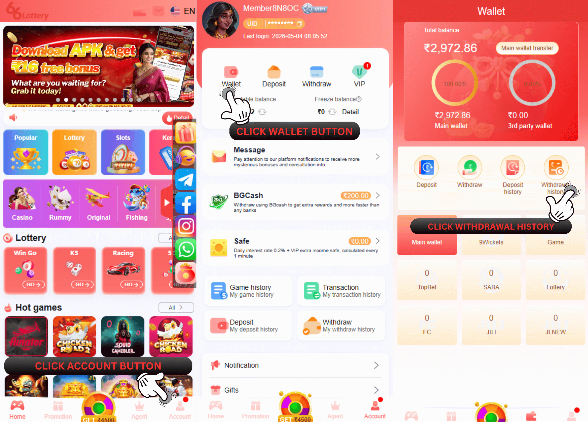
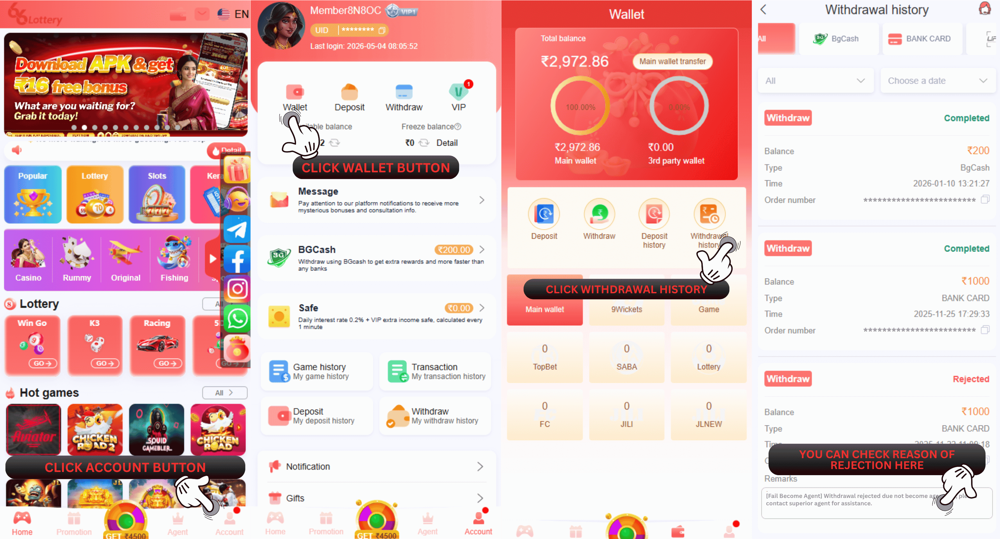

निकासी की जांच कैसे करें
अपनी निकासी समस्याओं के बारे में पूछताछ करने के लिए, कृपया पहले अपनी निकासी सूची में अपनी निकासी स्थिति की जांच करें! अपनी निकासी स्थिति के आधार पर पूछताछ करें और अपनी समस्या का समाधान करें!

66 Lottery निकासी रिकॉर्ड में तीन स्थितियाँ प्रदर्शित करेगा
